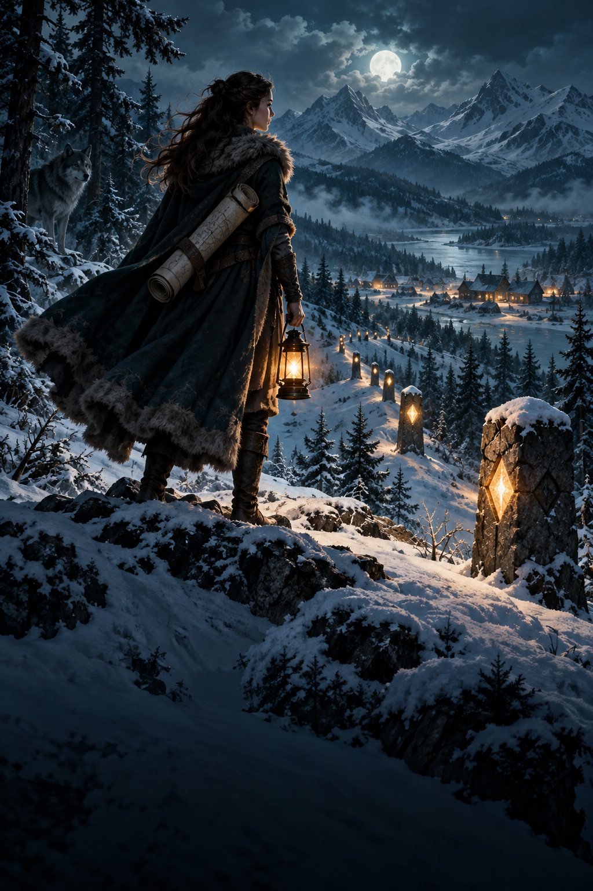

The Winter Boundary
When the pack border moves overnight, a cartographer must uncover the lie that left families outside the ward for eleven winters.
The Line in the Snow
On the morning the boundary moved, Mara Vale found a child's mitten caught on a fence post that had not been there the night before.
It was blue, hand knitted, and stiff with frost. On its cuff someone had stitched a tiny yellow star. Mara stood among the pines with her survey case open at her feet and looked from the mitten to the painted post. The red mark on the wood was fresh. So were the shovel cuts in the snow. Fifty paces beyond it stood the old boundary stone, almost buried, exactly where it had stood on every map her grandfather had drawn.
Someone had moved the pack line while the village slept.
A border was more than a claim of land for the wolves of North Hollow. Their winter wards followed it. Every household inside received firewood and medicine from the common store. Every household outside was somebody else's problem. Mara's work as cartographer was supposed to be simple: measure the markers, draw them accurately, and report damage before the deep snow made travel impossible. Her father, Pack Leader Eamon Vale, had repeated that definition often enough that she had once believed it.
She slipped the mitten into her coat and measured the distance between the two posts. Forty-seven paces. At first she blamed a careless work crew. Then she saw three more new posts farther up the ridge, each set inward toward the village. The distance between the old stone and the new line widened as the path climbed. The missing land formed a narrow wedge, and in that wedge she could see chimney smoke.
The rest of the story is omitted from this design preview.
Comments
Write a comment...